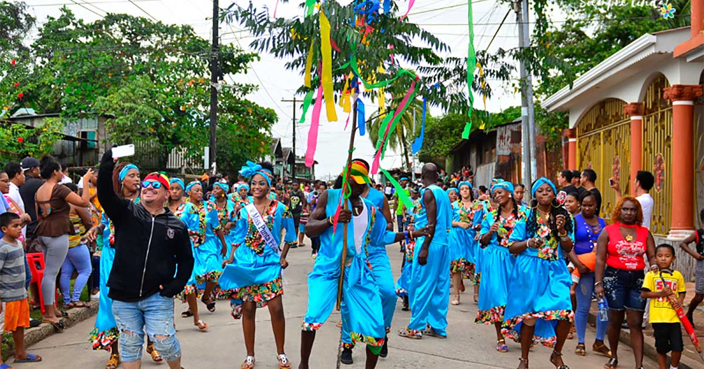

Corn Island: Salida del aeropuerto nacional de Managua La Costeña, Desayuno. Disponemos de todo el día para disfrutar de la playa de arena blanca y agua color turquesa y del sol. También recomendamos explorar la isla por su cuenta, visitar sus restaurantes y bares o rentar un cuadraciclo para recorrer la isla. Noche de alojamiento en Corn Island.
Haulover Lugar lleno de cultura y tradición, pintorescos paisajes, rodeado de un azul marino que te encantará. Limita al norte con Waspam, al sur con Prinzapolka, al este con el mar Caribe y al oeste con Rosita y Waspam.
Explore la isla Big Corn durante este viaje de 3 días desde Managua, sumérjase en la isla con caminatas por la playa, snorkel y natación. Conozca la historia de la isla, llena de conquistadores y piratas, así como la cultura. Sumérjase en un abundante plato de mariscos, luego trabaje con un kayak por la costa. Se incluyen vuelos de ida y vuelta desde Managua, alojamiento en Big Corn Island y desayunos.
Laguna de Perla podra disfrutar de un día completo de las tibias aguas de caribe, donde podrá relajarse o practicar de diferente tipo de actividades como snorkeling y buceo. podra nadar de una isla a otra, ya que algunas se encuentran relativamente cerca. Cabe destacar que en las orillas de dichas islas se puede observar estrellas de mar de todo tamaño, así como variedad de peces.
El recorrido comienza con una visita a la Eco-granja Grenn Hills ubicado a 15 minutos al sur de Bluefields por barco. Green Hills es un refugio acogedor situado en el borde de la Laguna de Bluefields. Es un excelente lugar para relajarse entre los árboles de frutas y maderas o en una cabaña mientras disfruta la vista de la bahia de Bluefields.
Puerto Cabeza ofrece un Lugar lleno de cultura y tradición, pintorescos paisajes, rodeado de un azul marino que te encantará. Se encuentra a 560 kilómetros de la ciudad de Managua. Limita al norte con Waspam, al sur con Prinzapolka, al este con el mar Caribe y al oeste con Rosita y Waspam, Encontrará alojamientos, centros recreativos, alimentos y bebidas, tour operadoras y playas morenas. Podrán disfrutar de las tradiciones culturales y religiosas.
Imponente, cómoda y elegante habitación, diseñada para la familia con todas las prestaciones Premium que ofrece nuestro hotel. Cuenta con una habitación principal con cama King y otra con camas Twins. La habitación Doble Junior Suite tiene capacidad máxima 4 personas. Si se incluye una persona sobre la capacidad tendrán que pagar $17.25 adicionales.
Malecon Bilwi ofrece un ambiente único donde te puedes divertir y darte un relax mirando las playas de Bilwi, increíble restaurante a la par del muelle también esta el restuarante que cuenta con comida rápida para los niños, por otro lado el karaoke para disfrutar con amigos y también con una discoteca.